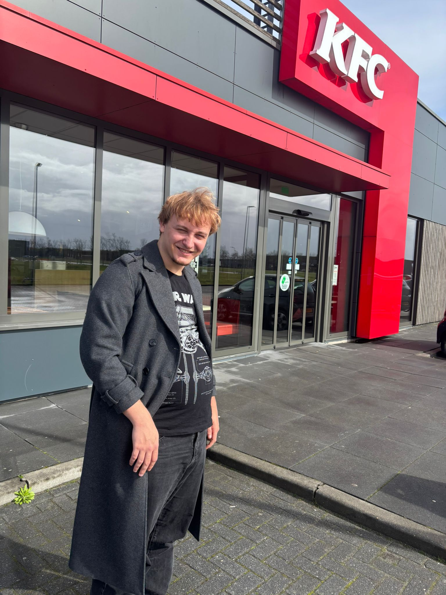
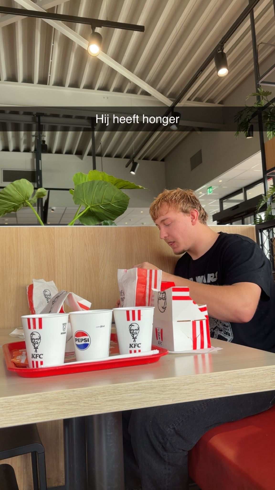

Dit is Justin. Hij is 22 jaar, maar gedraagt zich als een 13-jarige puber. Hij eet alles wat los en vast zit en is heel sterk (denkt hij zelf). 22 juni is hij jarig en ik mag niet op z’n feesje kome... Hij heeft mooi oranje haar en het mooiste en liefste gezichtje ooit. Hij woont helaas helemaal in Drenthe, dus ik kan hem niet zo vaak zien als ik wil. Ondanks dat reis ik toch wekelijks 5 uur naar hem toe. Weet je waarom? Omdat ik van Justin hou. En omdat ik van Justin hou maak ik ook deze domme page.

